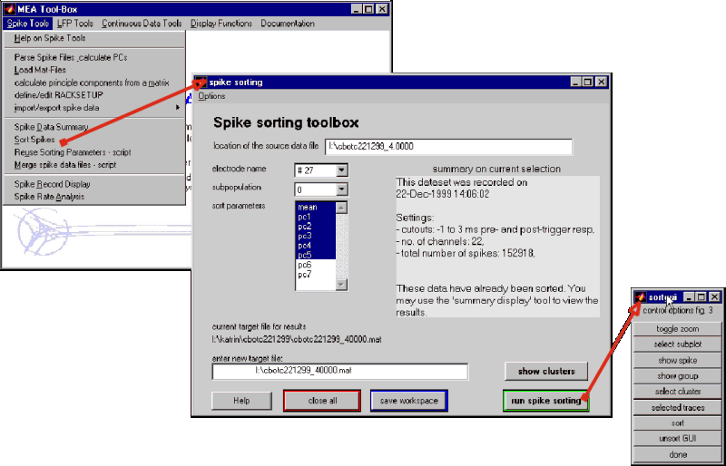

| Spike sorting 1/5 - Initial Steps |
MEA-Tools provides some utilities that are intended to review the spikes
shapes, define subpopulations of spikes based on principle component analysis
and review the sorted time series.
Principle components are calculated during the 'Parse Spikes' procedure
in the Spike Tools menu. The results of that step are stored in a mat-file
which should be reloaded before sorting.
The first steps after file parsing are illustrated in this graph. The 'spike sorting' window allows you to define the electrode, subpopulation and parameters to use in the subsequent sorting step. The location of the source file must be given to allow retrieval of the spike waveforms. Per default the most recent entry for that mat-file is reused, so you should check and adjust if necessary. Likewise for the target file.
